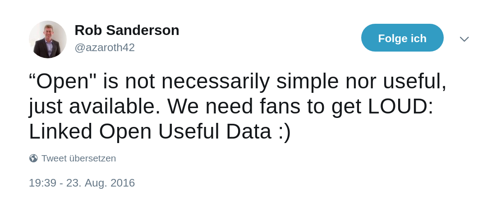
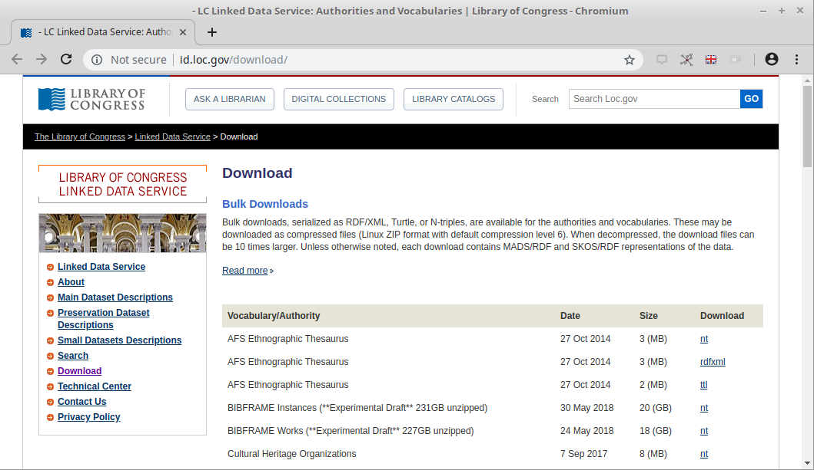
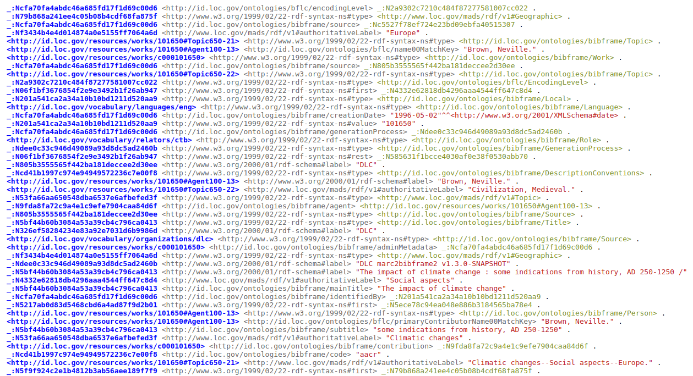
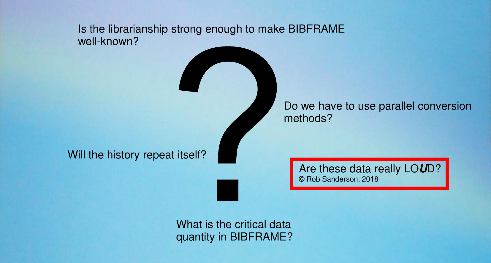
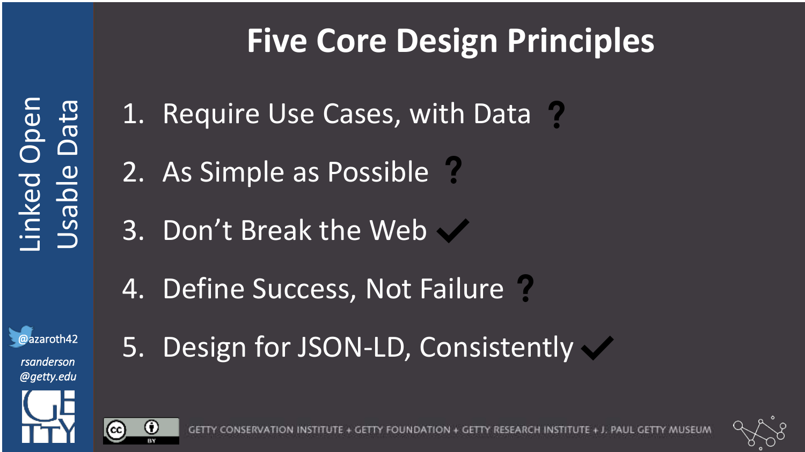

From LOD to LOUD:
making data usable
Workshop at SWIB18
Fabian Steeg /
@fsteeg &
Adrian Pohl /
@acka47 &
Pascal Christoph /
@dr0ide
Linked Open Data, Hochschulbibliothekszentrum NRW (hbz)

Bonn, 2018-11-26
This presentation:
http://hbz.github.io/swib18-workshop

Overview
| Part I | Convert RDF data into usable JSON-LD | 13:15-15:00 |
| Part II | Index and access the data with Elasticsearch | 15:00-16:30 |
| Break | Cake | 15:30-16:00 |
| Part III | Use the data to build a web application | 16:30-17:30 |
| Part IV | Use the data in existing tools: Kibana, OpenRefine | 17:30-18:45 |
Our background & experience
Hochschulbibliothekszentrum des Landes Nordrhein-Westfalen, est. 1973
= Academic library center of North Rhine-Westphalia
Software services for libraries in NRW and beyond
E.g. union catalog, discovery portal DigiBib, ILL, digitization & digital preservation, consortial acquisition
SWIB co-organizer
lobid: hbz's LOD service, providing bibliographic data, authorities & organizations
Started 2010 with open data publication, triple store & Perl transformation script
Original team: Adrian, Pascal, Felix. Fabian joined in 2012.
2013: First API release based on JSON-LD & Elasticsearch
2017–2018: LOUD with lobid API 2.0
http://lobid.org/team | http://blog.lobid.org
Your background & experience
RDF?
Bulk data processing?
Command line?
Software development?
LOUD
Term coined by Robert Sanderson in 2016 (see also his Linked Pasts Keynote)
Linked Open Usable Data (LOUD)
Core idea: to make your data useful you have to know and cater to your audience
Primary audience of LOD: people developing (1st and 2nd party) or using (3rd party) software to access the data
LOUD: oriented towards the needs and conventions for developing software
Source: Rob Sanderson, "Shout it Out: LOUD", CC-BY (video)
Source: Rob Sanderson, "Shout it Out: LOUD", CC-BY (video)
Design for JSON-LD
from RDF, consistently
(Our background & this workshop: we start with RDF data)
Part I:
Convert RDF data into usable JSON-LD
| Usable data & APIs | Application Programming Interfaces: why, how | 13:00-13:15 |
| JSON APIs | Using the GitHub API, processing JSON | 13:15-14:00 |
| From RDF to JSON | JSON-LD processing with jsonld.js via jsonld-cli | 14:00-15:00 |
Part Ia.
Usable data & APIs
APIs: why, how
Usable data [& APIs]
Data is used with software
Build new software with the data
Use existing software with the data
Libraries are Software
Our collections and services are delivered primarily via software. [...] The choices we make in the development, selection, and implementation of this software [...] define the limits of our content and services. We can only be as good as our software.
— Cody Hanson, Libraries are Software
[Usable data &] APIs
Software
requires APIs
APIs make software development manageable
(for 1st and 2nd party software)
APIs enable usage and integration of 3rd party software
e.g. lobid sources, formats, applications

APIs decouple applications from specific data sources, formats, and systems. They enable modular, sustainable applications.
API: why?
★ Right abstraction for the audience
Data is used with software
Software requires APIs
API: why?
Usable data
is data with APIs
API: how?
3. Don't break the web
API: how?
JSON over HTTP
standard web API format since years
e.g. https://api.github.com/
GET https://api.github.com
{
"current_user_url": "https://api.github.com/user",
"authorizations_url": "https://api.github.com/authorizations",
"emails_url": "https://api.github.com/user/emails",
"emojis_url": "https://api.github.com/emojis",
"events_url": "https://api.github.com/events",
"feeds_url": "https://api.github.com/feeds",
"followers_url": "https://api.github.com/user/followers",
"gists_url": "https://api.github.com/gists{/gist_id}",
"hub_url": "https://api.github.com/hub",
...
}
Part Ib.
JSON APIs
Using the GitHub API, processing JSON
Setup
($ git pull origin master)
cURL
Command line tool for transferring data with URLs
https://curl.haxx.se/download.html
$ curl --help('$' means you should type this in your terminal application)
Exercise 1a: cURL
| cURL |
|
| Paste |
|
| History |
|
(You can copy and paste in the terminal with Shift+Ctrl+C and Shift+Ctrl+V)
Exercise 1b: cURL
| Profile |
|
| Repo |
|
('<???>' means you should insert your solution here)
We have a repo for this workshop called 'swib18-workshop' under the 'hbz' organization
Exercise 1c: cURL
Solution
| Profile |
|
| Repo |
|
('$' means you should type this in your terminal application)
Response
$ curl https://api.github.com/repos/hbz/swib18-workshop
{
"id": 150073510,
"node_id": "MDEwOlJlcG9zaXRvcnkxNTAwNzM1MTA=",
"name": "swib18-workshop",
"full_name": "hbz/swib18-workshop",
"private": false,
"owner": {
"login": "hbz",
"id": 6557108,
"node_id": "MDEyOk9yZ2FuaXphdGlvbjY1NTcxMDg=",
"avatar_url": "https://avatars3.githubusercontent.com/u/6557108?v=4",
"gravatar_id": "",
Output is quite long, we often want specific values
JavaScript Object Notation (JSON)
var options = {
url: 'https://api.github.com/repos/hbz/swib18-workshop',
headers: { 'User-Agent': 'hbz' }
};
request(options, function (error, response, body) {
var doc = JSON.parse(body);
console.log('repo license:', doc.license.name) // <-- use JSON
});
> license.name: Creative Commons Attribution 4.0 International
jq
A lightweight and flexible command-line JSON processor
https://stedolan.github.io/jq/
$ jq --help('$' means you should type this in your terminal application)
Exercise 2a: JSON with jq
$ curl https://api.github.com/repos/hbz/swib18-workshop \
| jq .name # filter: .name
('$' means you should type this in your terminal application)
Exercise 2b: JSON with jq
| Issues |
|
| License |
|
('<???>' means you should insert your solution here)
Exercise 2c: JSON with jq
| Issues |
|
| License |
|
('$' means you should type this in your terminal application)
So JSON is great.
But what if we have RDF data?
Part Ic.
From RDF to JSON
JSON-LD processing with jsonld.js via jsonld-cli
Bibframe datasets (N-Triples)
Example work
 Source file: https://github.com/hbz/swib18-workshop/blob/master/data/loc.ntJSON-LD
"designed to be usable directly as JSON, with no knowledge of RDF" — it's real JSON!
"also designed to be usable as RDF"
5. Design for JSON-LD, consistently
Great, so let's make JSON-LD from RDF
jsonld-cli
JSON-LD command line interface tool
https://github.com/hbz/jsonld-cli
Our fork of https://github.com/digitalbazaar/jsonld-cli, added import from N-Quads
$ jsonld --help('$' means you should type this in your terminal application)
Exercise 3:
N-Triples to JSON-LD
| Location |
|
| Import |
|
| Write |
|
('$' means you should type this in your terminal application)
Result
{
"@id": "http://id.loc.gov/resources/works/c000101650",
"http://id.loc.gov/ontologies/bibframe/subject": [{
"@id": "http://id.loc.gov/resources/works/101650#Topic650-20"
}, ...]
}, {
"@id": "http://id.loc.gov/resources/works/101650#Topic650-20",
"@type": [
"http://id.loc.gov/ontologies/bibframe/Topic",
"http://www.loc.gov/mads/rdf/v1#ComplexSubject"
],
"http://www.w3.org/2000/01/rdf-schema#label": [{
"@value": "Climatic changes--Europe."
}],...
}
Exercise 3a:
Use serialized RDF to access subjects
| Identify field |
|
| Access field |
|
`http://www.w3.org/2000/01/rdf-schema#label`.`@value`?
Can't work: we have just a flat array of objects, which label?
Problem: only technically JSON, but not usable
So JSON is great?
Worst of both worlds
Unwieldy URIs as keys from RDF
Syntactic overhead from JSON
Bad readability & usability
Result
{
"@id": "http://id.loc.gov/resources/works/c000101650",
"http://id.loc.gov/ontologies/bibframe/subject": [{
"@id": "http://id.loc.gov/resources/works/101650#Topic650-20"
}, ...]
}, {
"@id": "http://id.loc.gov/resources/works/101650#Topic650-20",
"@type": [
"http://id.loc.gov/ontologies/bibframe/Topic",
"http://www.loc.gov/mads/rdf/v1#ComplexSubject"
],
"http://www.w3.org/2000/01/rdf-schema#label": [{
"@value": "Climatic changes--Europe."
}],...
}
Data processing vs. API access
| Data processing |
|
| API access |
|
Developer empathy
When it comes to APIs, developers are your users. The same principles of user-centred-design apply to the development and publication of APIs (simplicity, obviousness, fit-for-purpose etc).
API Design Guide, Digital Transformation Agency, Australia
Non-developer empathy
Default RDF -> JSON-LD requires programming with loops & conditionals to access a single nested field, the subject label
Should be as simple as doc.license.name
Not providing an API actually excludes non-developers by putting up barriers for usage with CLI or GUI tools
★ Few barriers to entry
Design for JSON-LD from RDF, consistently
Framing
Frame the way we look at our graph from the perspective of one entity type (to make it a tree, or a document)
Look at my data from a "Work" perspective, and embed other entities under their works
Exercise 4:
Framing
| frame .json |
|
| Frame |
|
| Write |
|
('$' means you should type this in your terminal application)
Result
{
"@id": "http://id.loc.gov/resources/works/c000101650",
"http://id.loc.gov/ontologies/bibframe/subject": [{
"@id":"http://id.loc.gov/resources/works/101650#Topic650-20",
"@type": [
"http://id.loc.gov/ontologies/bibframe/Topic",
"http://www.loc.gov/mads/rdf/v1#ComplexSubject"
],
...
"http://www.w3.org/2000/01/rdf-schema#label": "Climatic changes--Europe."
}, {...}],
}
Exercise 4a:
Use framed JSON-LD to access subjects
| Identify field |
|
| Access field |
|
`http://id.loc.gov/ontologies/bibframe/subject`
.`http://www.w3.org/2000/01/rdf-schema#label`?
Could work conceptually, but not very handy
2. As simple as possible?
JSON-LD Context
Mapping of JSON keys to URIs: "@context":{"name":"http://schema.org/name"}
With this context, we can compact (replace URIs with short keys) or expand (replace short keys with URIs) our JSON-LD
http://schema.org/name ⇄ name
`http://id.loc.gov/ontologies/bibframe/subject`
.`http://www.w3.org/2000/01/rdf-schema#label`?
How do we get the context?
Here: context generated from ontologies with (much) manual post-processing
Alternatives: upfront design or generate from data
To be discussed in JSON-LD break-out session
Context: more than simple mappings
★ Few exceptions, many consistent patterns
Consistency
e.g. the contribution field should always be an array, even if a particular record has only one contribution | spec
Other fields, which occur only once for every record can use the default non-array single values
To have all fields always be arrays: compacting option compactArrays:false
(Consistent field types also required for Elasticsearch indexing)
Describing values
e.g. field 'contribution' should always be a JSON array
"contribution": {
"@id": "http://id.loc.gov/ontologies/bibframe/contribution",
"@container": "@set"
}
Exercise 5:
Compact
| Compact |
|
| Write |
|
('$' means you should type this in your terminal application)
Result
{
"@id": "http://id.loc.gov/resources/works/c000101650",
"subject": [
{
"id": "http://id.loc.gov/resources/works/101650#Topic650-20",
"type": [
"Topic",
"ComplexSubject"
],
"label": "Climatic changes--Europe."
}
], ...
}
Exercise 5a:
Use compact JSON-LD to access subjects
| Identify field |
|
| Full Title |
|
| Subject |
|
('$' means you should type this in your terminal application)
Exercise 5a:
Solution
| like .license .name? |
|
| Access one |
|
| Access all |
|
('$' means you should type this in your terminal application)
Missing values in context
Un-mapped URI in the data
Will still be URI after compaction
Iterate: compact, check data, fix context, compact again
Exercise 5b: Fix context
| Check paths |
|
| Find URIs |
|
| Update context |
|
| Compact |
|
('$' means you should type this in your terminal application)
Exercise 6: Use final JSON
| Identify fields |
|
| Authors |
|
| Subtitle |
|
| To N-Quads |
|
('$' means you should type this in your terminal application)
Exercise 6: Solutions
| Authors |
|
| Subtitle |
|
('$' means you should type this in your terminal application)
So JSON is great
Best of both worlds
RDF-compatible linked data
Useful, practical JSON
RDF view
Multiple steps to make usable JSON-LD
Serialize RDF as JSON-LD, frame, compact
1. Require use cases, with data
JSON view
Add context to usable JSON
(Add @ids where needed)
Context maps stable API to implementation details
Applications can use the 'name' field in their code, no matter what URI it's mapped to (which unfortunately may change)
JSON with context
(based on part of https://api.github.com/users/hbz)
{
"@id": "https://github.com/users/hbz",
"type": "Organization",
"name": "hbz",
"blog": "https://www.hbz-nrw.de",
"@context": {
"type": "@type",
"name": "https://schema.org/name",
"blog": { "@id": "https://schema.org/url", "@type": "@id" },
"Organization": "https://schema.org/Organization"
}
}
You can test this in the JSON-LD Playground
JSON as RDF
{
"@context": "...",
"type": "Organization",
"name": "hbz",
"blog": "https://www.hbz-nrw.de",
}
<https://github.com/users/hbz> \
<http://www.w3.org/1999/02/22-rdf-syntax-ns#type> \
<https://schema.org/Organization> .
<https://github.com/users/hbz> <https://schema.org/name> "hbz" .
<https://github.com/users/hbz> <https://schema.org/url> \
<https://www.hbz-nrw.de> .
Output of N-Quads tab in the JSON-LD Playground
Part I: Convert RDF data into usable JSON-LD
Part II: Index and access the data with ElasticsearchPart II:
Index and access the data with Elasticsearch
| Elasticsearch bulk indexing | Create bulk format with jq, index with curl | 15:00-15:30 |
| Break | Cake | 15:30-16:00 |
| Access the Elasticsearch index | Search queries, direct access by ID | 16:00-16:30 |
Part IIa.
Elasticsearch bulk indexing
Create bulk format with jq, index with curl
Elasticsearch
"A distributed, RESTful search and analytics engine"
Based on Lucene, like Solr
Stores JSON documents, no explicit schema required
Exercise 7: Convert more data (100 documents)
| Input file |
|
| Import |
|
| Frame |
|
| Compact |
|
('$' means you should type this in your terminal application)
Exercise 7: Solutions
| Import |
|
| Frame |
|
| Compact |
|
('$' means you should type this in your terminal application)
Elasticsearch bulk format
{"index":{"_index":"loc","_type":"work","_id":"c000101650"}}{@context: ...,"id":"http://...","type":["Work","Text"],...}bulk.ndjson
Input data format
{
"@context": { ... },
"@graph": [
{ "id": "http://.../1", "type": ["Work", "Text"], ... },
{ "id": "http://.../2", "type": ["Work", "Text"], ... },
...
]
}
We want to process each element of the @graph array
Exercise 8a: Document line
| All |
|
| All, 1 line |
|
| Each doc, 1 line |
|
('$' means you should type this in your terminal application)
Second line for each pair in bulk.ndjson: 1 doc in 1 line
Exercise 8b: Metadata line
| Like previous |
|
| Construct JSON |
|
| Insert values |
|
| Full metadata |
|
First line for each pair in bulk.ndjson: index metadata
Exercise 8c: Putting it together
| Insert newline with -r |
|
| Write bulk .ndjson |
|
('$' means you should type this in your terminal application)
Elasticsearch bulk API
Send the bulk.ndjson file to the Elasticsearch bulk API
HTTP POST to /_bulk
Setup
You Know,
for Search
Exercise 9: Bulk indexing
| Check data |
|
| Index data |
|
| Check index |
|
('$' means you should type this in your terminal application)
Part IIb.
Access the Elasticsearch index
Search queries, direct access by ID
Elasticsearch URI search
Search query as part of the URI (very versatile: full text, fields, boolean operators, wildcards, etc.)
(Won't cover here: body search, even more advanced)
HTTP GET .../<index>/<type>/_search?q=<query-string>
Exercise 10a: Query syntax
| Full text |
|
| Field search |
|
| Boolean |
|
| Wildcards |
|
('<???>' means you should insert your solution here)
Exercise 10b: Solutions
| Full text |
|
| Field search |
|
| Boolean |
|
| Wildcards |
|
('$' means you should type this in your terminal application)
Direct access by ID
Direct doc access: /<index>/<type>/<id>
http://example.com/loc/work/c000000007
But our index IDs are URIs
http://localhost:9200/loc/work/http%3A%2F%2Fid.loc.gov%2Fresources%2Fworks%2Fc000000007
Exercise 11a: Re-index
| jq: split |
|
| Recreate bulk .ndjson |
|
| Delete index |
|
| Reindex |
|
Exercise 11b: GET by ID
| GET by ID |
|
| Source only, formatted |
|
('<???>' means you should insert your solution here)
Exercise 11c: Solutions
| GET by ID |
|
| Source only, formatted |
|
('$' means you should type this in your terminal application)
Direct access by ID
Direct access by ID: /<index>/<type>/<id>
Exercise 12a: Remote JSON to N-Quads
| Local |
|
| Remote |
|
No context: was included once, at top level, with @graph
Input data format
{
"@context": { ... },
"@graph": [
{ "id": "http://.../1", "type": ["Work", "Text"], ... },
{ "id": "http://.../2", "type": ["Work", "Text"], ... },
...
]
}
We processed & indexed each element of the @graph array
Add context
Need to include for each document
Not embedded, but remote: add context URL
(Server needs to serve context as application/ld+json, with CORS header, we will cover CORS in part III)
Exercise 12b: Serve context
| Run server (new terminal) |
|
| Access context (old terminal) |
|
('$' means you should type this in your terminal application)
Exercise 12c: Link to context
| jq: add JSON |
|
| Add context URL |
|
| Write bulk .ndjson |
|
Exercise 12d: Reindex and use
| Delete index |
|
| Reindex |
|
| To N-Quads |
|
('$' means you should type this in your terminal application)
API: How — JSON over HTTP
Serving our data as JSON over HTTP, serializable as RDF
Elasticsearch: so much more
Boosting, Analyzers, Aggregations, etc.
Part II: Index and access the data with Elasticsearch
Part III: Use the data to build a web applicationPart III:
Use the data to build a web application
| Search page | HTML page for index search | 16:00-16:30 |
| Sample searches | Use the page to query the data | 16:30-17:00 |
| Hypothes.is | Embed Hypothes.is in HTML, add annotations to document the data | 17:00-17:30 |
Part IIIa.
Search page
HTML page for index search
Exercise 13: HTML
| Edit new file |
|
| Paste content |
|
| Open in browser |
|
JQuery
Provides API to simplify interaction with the browser DOM (document object model)
Dynamic content, user interaction, web service calls
Exercise 14: Text Input
<head>
<!-- previous head content -->
<script src="https://code.jquery.com/jquery-3.3.1.min.js">
</script>
</head>
<body>
<input id='search' type='text'/>
<script>
$('#search').keyup(function() {
var q = $('#search').val();
console.log(q);
});
</script>
<div id='result'></div>
</body>
(Open your browser's developer tools with Ctrl+Shift+I to see the console.log output)
AJAX
"Asynchronous JavaScript And XML"
Asynchronous JavaScript And XML JSON
Call web services, do something when we get the result
Part of the browser: XMLHttpRequest
Also available in JQuery: $.ajax(options)
Exercise 15: AJAX request
$('#search').keyup(function() { // <-- insert after this
var q = encodeURIComponent($('#search').val());
$.ajax({
url: `http://localhost:9200/loc/work/_search?&q=${q}`,
success: function(result) {
console.log(JSON.stringify(result));
},
error: function(jqXHR, textStatus, errorThrown) {
console.log(textStatus, ': ', errorThrown);
}
});
});
(Open your browser's developer tools with Ctrl+Shift+I to see the console.log output)
Cross-Origin Resource Sharing (CORS)
Error: not allowed by Access-Control-Allow-Origin
Client (our HTML+JS) is in a different location than the web service API we are calling (Elasticsearch server)
API server needs to set header: Access-Control-Allow-Origin
Specify which domain can make requests, or set it to * to allow access from anywhere
Exercise 16: Configure CORS
| Edit config file |
|
| Add content |
|
| Restart Elasticsearch |
|
| Check log |
|
Stop the tail command with Ctrl+C after the restart is complete ("started")
Exercise 17:
AJAX request, second try
$('#search').keyup(function() { // <-- insert after this
var q = encodeURIComponent($('#search').val());
$.ajax({
url: `http://localhost:9200/loc/work/_search?&q=${q}`,
success: function(result) {
console.log(JSON.stringify(result));
},
error: function(jqXHR, textStatus, errorThrown) {
console.log(textStatus, ': ', errorThrown);
}
});
});
(Open your browser's developer tools with Ctrl+Shift+I to see the console.log output)
Response format
{
"took": 1,
"timed_out": false,
"hits": {
"total": 100,
"max_score": 1,
"hits": [
{
"_index": "loc",
"_type": "work",
"_id": "c000000007",
"_score": 1,
"_source": {
"@context": "context.json",
"id": "http://id.loc.gov/resources/works/c000000007",
Exercise 18: Process hits
success: function(result) {
console.log(JSON.stringify(result)); // add after this
$("#result").html('<p/>');
var hits = result.hits.hits;
for (let hit of hits) {
var label = hit._source.label;
$("#result").append('<hr/>' + label);
}
}
Append the label of each hit to the result div in our HTML
Exercise 19: Improve UI
| Total hits |
|
| Links |
|
Show total hits, link from each hit to its JSON
Part IIIb.
Sample searches
Use the page to query the data
Documentation
Which field? How is it nested?
Samples very useful as documentation
Embed a live sample from the index in the search UI
★ Documentation with working examples
Exercise 20: columns
| Wrap body content in divs |
|
| Define CSS styles in head |
|
Exercise 21:
Embed sample from index
<script>
$.ajax({
url: 'http://localhost:9200/loc/work/c000000026/_source',
success: function(result) {
console.log(JSON.stringify(result));
$("#sample").html(JSON.stringify(result, null, 2));
},
error: function(jqXHR, textStatus, errorThrown) {
console.log(textStatus, ': ', errorThrown);
}
});
// previous script content here
</script>
(Open your browser's developer tools with Ctrl+Shift+I to see the console.log output)
★ Comprehensible by introspection
Look at sample document
Full query access to every field you see
(Look up details for meaning of keys in the context)
What you see is what you can query
Don't pre-define fixed params for authors, subjects, etc.
Instead define a general syntax to query any field
New fields added to the data can immediately be queried
4. Define success, not failure
Exercise 22: Query syntax
| Field search |
|
| Boolean |
|
| Wildcards |
|
| Ranges |
|
| Exists |
|
Exercise 22: Solutions
| Field search |
|
| Boolean |
|
| Wildcards |
|
| Ranges |
|
| Exists |
|
Part IIIc.
Hypothes.is
Embed Hypothes.is in HTML, add annotations to document the data
Hypothes.is
"Annotate the web, with anyone, anywhere"
"Use Hypothesis right now to hold discussions, read socially, organize your research, and take personal notes"
or: to create sample-based, collaborative documentation
Based on browser plugin, proxy server, or embedded JS
Exercise 23:
Embedding Hypothes.is
<head>
<!-- previous head content -->
<script type="application/json" class="js-hypothesis-config">
{ "openSidebar": true }
</script>
<script src="https://hypothes.is/embed.js" async></script>
<link rel="canonical"
href="https://hbz.github.io/swib18-workshop/search.html"/>
</head>
(Only embed.js script is required, config and canonical link are optional)
Exercise 24:
Add annotations
Based on your experience in the query exercise, pick a field and document it like in one of the sample annotations
Markdown syntax is supported for links etc.
Use the `swib18-workshop` tag to make it searchable
Part III: Use the data to build a web application
Part IV: Use the data with existing toolsPart IV:
Use the data with existing tools
| Kibana | Create visualizations for local index data; look at full data visualizations | 17:30-18:15 |
| OpenRefine | Use index data in OpenRefine; brief intro to the reconciliation API | 18:15-18:45 |
Part IVa.
Kibana
Create visualizations for local index data; look at full data visualizations
Kibana
"Explore, Visualize, Discover Data"
Open source data visualization plugin for Elasticsearch
Running locally at http://localhost:5601/
Exercise 25: Bar chart
Create a bar chart visualization for the 'contribution.agent.type' field
(Kibana will display an additional 'keyword' suffix)
Exercise 26: Pie chart
Create a pie chart visualization for the 'adminMetadata.source.label' field
(Kibana will display an additional 'keyword' suffix)
Exercise 27: Tag cloud
Create a tag cloud visualization for the 'subject.componentList.authoritativeLabel' field
(Kibana will display an additional 'keyword' suffix)
Kibana: so much more
Other types of aggregations
Multiple aggregations in a visualization
Other visualization types
Kibana:
full LOC index
Part IVb.
OpenRefine
Use index data in OpenRefine; brief intro to the reconciliation API
OpenRefine
"A powerful tool for working with messy data"
"cleaning it; transforming it from one format into another; and extending it with web services and external data"
Spreadsheet-like user interface, in the browser, locally
Run with ./refine in your OpenRefine location, then open http://localhost:3333/
Exercise 28:
Getting labels for IDs
http://id.loc.gov/resources/works/c000000011
http://id.loc.gov/resources/works/c000000020
http://id.loc.gov/resources/works/c000000026
http://id.loc.gov/resources/works/c000000028
http://id.loc.gov/resources/works/c000000100
Copy the lines above to the clipboard
Create URL to get JSON
http://id.loc.gov/resources/works/c000000011 → http://localhost:9200/loc/work/c000000011/_source
"http://localhost:9200/loc/work/" + split(value, '/')[-1] + "/_source"
(Copy this to the clipboard)
Exercise 29:
Add first contributing agent
contribution[0].agent.label
Exercise 30:
Getting IDs for labels
Letters from an American farmer
Italian journeys
Report of the trial of George Ryan
The devil upon crutches in England
Educational interests of Colorado
"http://localhost:9200/loc/work/_search?q=\"" + replace(value, " ", "+") + "\""
value.parseJson().hits.hits[0]._source.id
Reconciliation API
All of the above: nothing specific built for OpenRefine, just JSON over HTTP, and lots to explore in OpenRefine
Implement OpenRefine Reconciliation API (serve some specific JSON) for better integration in OpenRefine UI
Select best matches using scores and small inline previews, filter by type, suggest fields for data extension, etc.
Reconciliation details
http://blog.lobid.org/2018/08/27/openrefine.html
https://github.com/OpenRefine/OpenRefine/wiki/Reconciliation
Review
| Part I | Convert RDF data into usable JSON-LD |
| Part II | Index & query the data with Elasticsearch |
| Part III | Use the data to build a web application |
| Part IV | Use it in existing tools: Kibana, OpenRefine |
Time for questions, discussions, feedback
Question from #eubfws2018
 Source:Miklós Hubay, "The Past, the Present & the Future of the Semantic Web & BIBFRAME in National Széchényi Library, Hungary"
LOUD is more than a nice JSON-LD API
(But a nice JSON-LD API is LOUDer than an RDF file)
Let's recall
Source: Rob Sanderson, "Shout it Out: LOUD", CC-BY
Bibframe, from LOD to LOUD?
Source: Rob Sanderson, "Shout it Out: LOUD", CC-BY
1. Require use cases, with data
Code for exercises and HTML for slides available on the web
https://github.com/hbz/swib18-workshop/